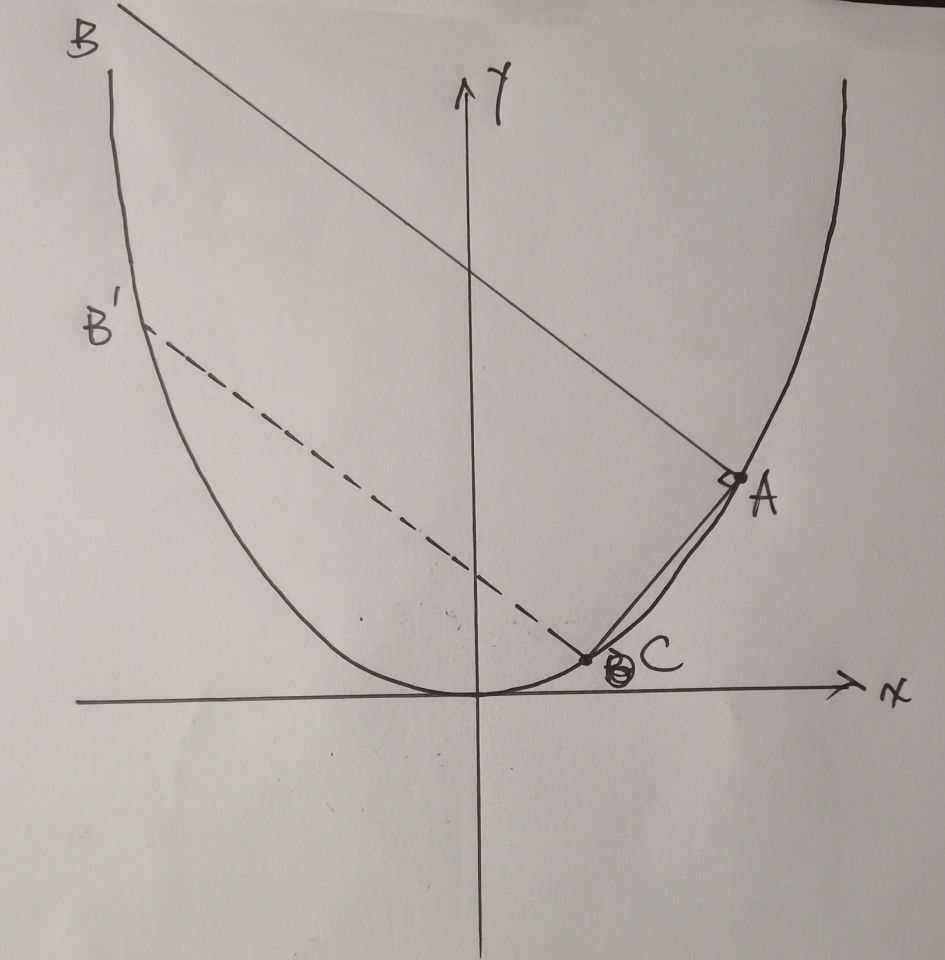
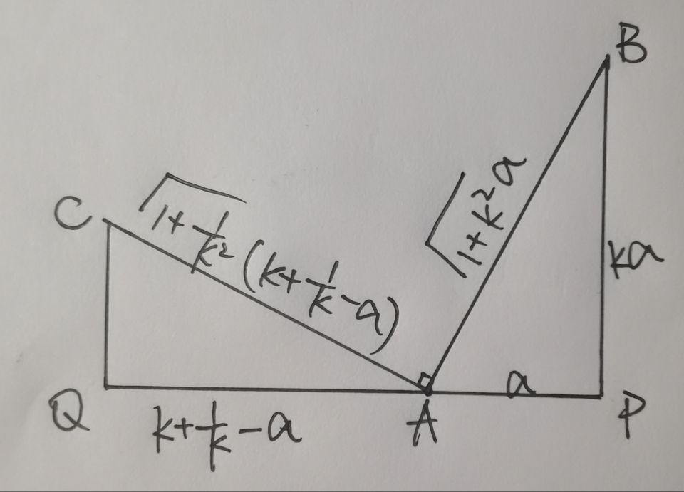

题目
点 $P$ 到 $x$ 轴的距离等于点 $P$ 到 $(0, \frac{1}{2})$ 的距离。记点 $P$ 的轨迹为 $C$.
(1) 求 $C$ 的方程；
(2) 已知矩形有三个点在 $C$ 上，证明矩形的周长大于 $3\sqrt 3$.
解答
第一问算出来方程为 $y = x^2 + \frac{1}{4}$, 没什么好说的，抛物线性质，注意是到 $x$ 轴的距离而不是准线。
第二问很有意思，难度不小。为了方便起见将抛物线方程里的 $\frac{1}{4}$ 丢掉，不影响结果（好孩子不要学我）
设矩形 $ABDC$ 中 $A, B, C$ 落在抛物线上。显然如果要周长小的话，$A$ 应当在 $B$ 和 $C$ 之间，如果画图的话这点很明显。那么先假设 $A$ 的横坐标介于 $B$ 和 $C$ 的横坐标之间。$B$ 和 $C$ 在 $A$ 同一侧的情况留到最后考虑。
设 $A$ 的坐标为 $(x_0, y_0)$, 不妨设 $x_C < x_A< x_B$. 直线 $AB$ 斜率设为 $k$（斜率显然不可能是 0 或者无穷）联立抛物线和直线 $AB$, 易求得 $x_B = k - x_0$. 同理 $x_C = -\frac{1}{k} - x_0$. 由 $x_C < x_B$ 进一步得到 $k > 0$. 矩形周长的一半为
$$
|AB| + |AC| = \sqrt{1 + k^2} |k - 2x_0| + \sqrt{1 + \frac{1}{k^2}} \left|-\frac{1}{k} - 2x_0\right|
$$
既然约定了 $A, B, C$ 的横坐标的大小关系，上式就可以去掉绝对值
$$
|AB| + |AC| = \sqrt{1 + k^2} (k - 2x_0) + \sqrt{1 + \frac{1}{k^2}} \left(\frac{1}{k} + 2x_0\right)
$$
这边换一个元 $a = k - 2x_0$, 为什么这么换，凭几何直觉（）最后会画图说明一下原因。由 $x_A > x_C$ 和 $x_A < x_B$ 得到 $a$ 的范围 $0<a<k + \frac{1}{k}$.
换元之后得到
$$
|AB| + |AC| = \sqrt{1 + k^2} a + \frac{\sqrt{1 + k^2}}{k} \left(k + \frac{1}{k} - a\right) = \left(1 - \frac{1}{k}\right) \sqrt{1 + k^2} a + \frac{(1 + k^2)^{\frac{3}{2}}}{k^2}
$$
这就可以看成关于 $a$ 的一次函数，那么关键就是 $a$ 的系数的正负性了，分两种情况讨论：
若 $k \ge 1$, $a$ 的系数非负，要周长最小，就是要 $a$ 小，最小会无限接近 $0$, 那么
$$
|AB| + |AC| > \frac{(1 + k^2)^{\frac{3}{2}}}{k^2} \ge \frac{3}{2} \sqrt 3
$$
右边导一导就出来了若 $0 < k < 1$, $a$ 的系数为负数，要周长最小，就是要 $a$ 大，将 $a < k + \frac{1}{k}$ 代入式子，得到
$$
|AB| + |AC| > \left(1 - \frac{1}{k}\right) \sqrt{1 + k^2} \left(k + \frac{1}{k} \right) + \frac{(1 + k^2)^{\frac{3}{2}}}{k^2} = \frac{(1 + \left(\frac{1}{k}\right)^2)^{\frac{3}{2}}}{\left(\frac{1}{k}\right)^2} \ge \frac{3}{2} \sqrt 3
$$
这样就能证到矩形的周长大于 $3\sqrt 3$.
剩下还有一种情况，$x_B, x_C$ 在 $x_A$ 的同一侧，这种情况显然比第一种情况要周长要大，但还得证明一下。不妨设 $x_A > x_B, x_A > x_C$, 那就有 $a < 0$ 和 $a < k + \frac{1}{k}$. 矩形的半周长
$$
|AB| + |AC| = \sqrt{1 + k^2} \cdot (-a) + \frac{\sqrt{1 + k^2}}{k} \left(k + \frac{1}{k} - a\right)> \sqrt{1 + k^2} \cdot (-a) + \frac{\sqrt{1 + k^2}}{k} \left(k + \frac{1}{k} - (-a)\right)
$$
这就和前一种情况一样了，不妨设 $k < 0$（不然交换 $B$ 和 $C$，不影响）那 $-a$ 的系数为正，易得 $|AB| + |AC| > \frac{3}{2}\sqrt 3$.
补充
思路上有两处是要结合图像来思考的。第一处是 $A,B,C$ 的横向位置关系，看第二种情况的图（$B, C$ 在同一侧）看着周长就很大，而且可以从 $C$ 点画一条垂线，和抛物线的交点 $B’$ 围成的新矩形显然比原来的矩形周长要小。

第二部分，将周长表示为 $k$ 和 $x_0$ 的式子之后，为什么要换元？不难发现 $|x_B - x_C|$ 是和 $x_0$ 没有关系的。那么把 $k$ 看成常数，$PQ$ 就是固定长度为 $k + \frac{1}{k}$ 的线段，问题就转化为：把 $PQ$ 切分成两部分，一部分乘一个小系数，另一部分乘一个大系数（这两个系数都比 $1$ 大），再将它们相加，要和尽可能小。

直觉上显然就是要短的部分乘大系数，长的部分乘小系数。那自然就是要短的部分尽可能短，短到越接近零越好。那对 $k$ 大小分类就是判断 $a$ 对应的是小系数还是大系数。如果是小系数，$a$ 就尽可能大；如果是大系数 $a$ 就尽可能小。
总结
按我这种做法，最关键的一点就是抽象出这样的几何直觉，不然光看 $k$ 和 $x_0$ 的式子，不结合具体的几何意义真的很难下手。难度除了体现在这一点之外，就算有很好的几何想法，落实到代数证明，就免不了要打各种补丁，证明自己那些直觉是有道理的，想严格证明还不是很容易。虽然考生都说数学很简单，但这道题想拿满分难度确实非常大。
碎碎念
21考卷压轴题送的，22年太忙没看题，今年23年压轴题实在是惊人。本来抱着”看看自己智力退化到什么程度了”心态简单看看，越陷越深，花了将近两个小时才严格（应该挺严格的吧？）证明出来，就算高中阶段也没做过这么顶的抛物线题，也算是弥补缺憾了。倒数第二题似乎和马尔可夫链有关，看上去也挺有意思，不过之后要准备考试/夏令营，摆了不写了（）